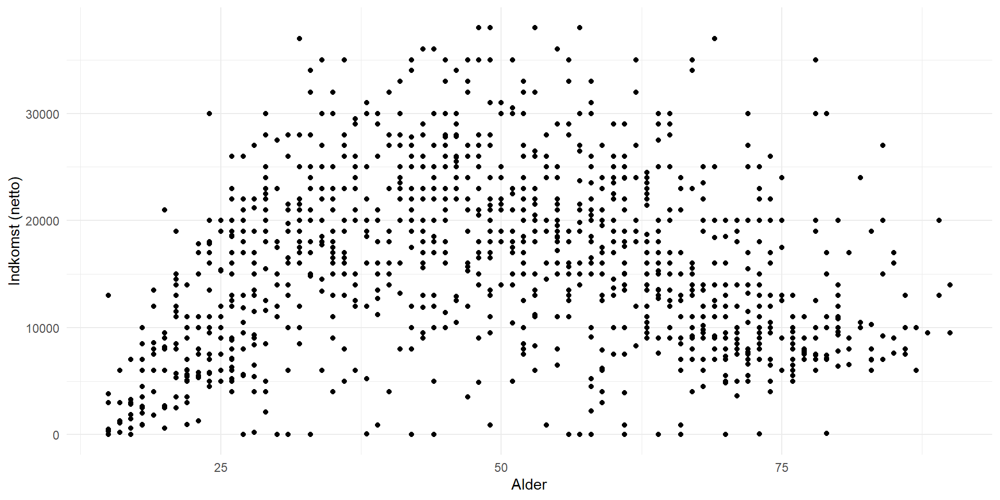

Lineær regression 4
Statistik E24 (15 ECTS)
ved Mikkeline Munk Nielsen
Program
Videregående regressionsanalyse:
Polynomier
Interaktionsvariable
Polynomier i lineær regression
Formålet med lineær regression er at finde den bedst egnede linje, der minimerer forskellene mellem observerede og forudsagte værdier
Den simple lineære regressionsmodel ser i udgangspunktet ud således:
\[ Y=\alpha+\beta*X+\epsilon \]
I nogle tilfælde har man dog brug for at kunne modulere ikke-lineære sammenhænge mellem vores afhængige og uafhængige variable
I disse tilfælde kan vi bruge polynomier i regressionsmodellen
Polynomier i lineær regression
Man inkluderer polynomier som variable i regressionsmodellen:
Lineær: \(Y=\alpha+\beta*X+\epsilon\)
Kvadratisk: \(Y=\alpha+\beta_1*X+\beta_2*X^2+\epsilon\)
Kubrisk: \(Y=\alpha+\beta_1*X+\beta_2*X^2+\beta_3*X^3+\epsilon\)
Du polynomier er mere fleksible kan de i nogle tilfælde give regressionslinjen et bedre “fit” til data.
Polynomier i lineær regression
Undersøg f.eks. sammenhængen mellem alder og indkomst i ESS datasættet:
Polynomier i lineær regression
Da vi testede med regressionsanalyse, om der var en sammenhæng mellem alder og indkomst, fik vi et insignifikant resultat og en \(\beta \approx 0\)… hældning var FLAD!
Polynomier i lineær regression
Men måske er sammenhængen bare ikke lineær?
Polynomier i lineær regression - R
Den lineære specifikation er ikke særlig god til at beskrive sammenhængen mellem alder og indkomst
Men det er polynomiet! Vi har altså misspecificeret sammenhængen i den første model
Vi kan inkluderer polynomier i vores regressionsmodel med specifikationen
polyi regressionsfunktionen for at inkludere polynomierHusk altid at inddrage lavere ordens variable, selvom de er insignifikante
Polynomier i lineær regression - R
model <- lm(net_indkomst ~ poly(alder, 2, raw = T), data = df)
texreg::screenreg(list(model), include.ci = F)
======================================
Model 1
--------------------------------------
(Intercept) -9629.77 ***
(1482.55)
poly(alder, 2, raw = T)1 1198.38 ***
(64.05)
poly(alder, 2, raw = T)2 -12.06 ***
(0.63)
--------------------------------------
R^2 0.23
Adj. R^2 0.23
Num. obs. 1179
======================================
*** p < 0.001; ** p < 0.01; * p < 0.05Polynomier i lineær regression
I princippet kan du blive ved med at inkludere højere ordens polynomier
Afvej dog altid med test, om det faktisk giver et bedre fit til data (bedre forklaringskraft)
Desto mere fleksibelt polynomium desto mere præcis bliver modellen… men modeller kan over-fittes!
Occam’s Razor princippet: less is more!
Polynomier i lineær regression
Interaktionsvariable
Vi har tidligere testet følgende sammenhæng mellem køn og indkomst, hvor vi kontrollerede for antal års uddannelse: \(indkomst=\alpha+\beta_1*kvinde+\beta_2*udd\_aar+\epsilon\)
Modellen viste, at kvinder gennemsnitligt tjener 1931 DKK mindre end mænd, når uddannelse holdes konstant.
Og ét års uddannelse ekstra giver gennemsnitligt 400 DKK mere om måneden, når køn holdes konstant.
Interaktionsvariable
model <- lm(net_indkomst ~ kvinde+udd_aar, data = df)
texreg::screenreg(list(model), include.ci = F)
=========================
Model 1
-------------------------
(Intercept) 11523.07 ***
(649.65)
kvinde -1930.94 ***
(459.23)
udd_aar 399.13 ***
(41.37)
-------------------------
R^2 0.08
Adj. R^2 0.08
Num. obs. 1179
=========================
*** p < 0.001; ** p < 0.01; * p < 0.05Interaktionsvariable
Men gad vide, om ”effekten” af uddannelse er forskellig for mænd og kvinder?
Dette kan testes med en såkaldt interaktionsvariabel mellem variablen koen og variablen antal års uddannelse
\(indkomst=\alpha+\beta_1*kvinde+\beta_2*udd\_aar+\beta_3*kvinde*udd\_aar+\epsilon\)
- Med interaktioner kan man se, om effekten af én variabel på \(Y\) er forskellig alt efter, hvilken værdi en anden forklarende variabel antager.
Interaktionsvariable
\(indkomst=\alpha+\beta_1*kvinde+\beta_2*udd\_aar+\beta_3*kvinde*udd\_aar+\epsilon\)
\(\alpha\): den forventede indkomst for en mand med 0 års uddannelse
\(\beta_1\): den forventede forskel i indkomst fra mænd til kvinder
\(\beta_2\): den forventede ændring i indkomst for hvert ekstra års uddannelse
\(\beta_3\): den ekstra forventede ændring indkomst for hvert ekstra års uddannelse, hvis man er kvinde
Interaktionsvariable
\(\alpha\): mænd med 0 års uddannelse tjener gennemsnitligt 11680 DKK
\(\beta_1\): kvinder tjener gennemsnitligt 2323 DKK mindre end mænd men resultatet er insignifikant)
\(\beta_2\): man tjener gennemsnitligt 388 DKK mere om måneden for hvert års ekstra uddannelse
\(\beta_3\): det estimeres at kvinder derudover tjener gennemsnitligt 28 DKK mere om måneden end mænd, hver gang de tager et års ekstra uddannelse (men resultatet er insignifikant)
model <- lm(net_indkomst ~ kvinde*udd_aar,
data = df)
texreg::screenreg(list(model),
include.ci = F)
============================
Model 1
----------------------------
(Intercept) 11680.27 ***
(801.11)
kvinde -2322.60
(1254.21)
udd_aar 387.65 ***
(53.70)
kvinde:udd_aar 28.28
(84.27)
----------------------------
R^2 0.08
Adj. R^2 0.08
Num. obs. 1179
============================
*** p < 0.001; ** p < 0.01; * p < 0.05Interaktionsvariable
Parameterestimatet for \(\beta_3\) er småt og insignifikant. Der er altså ikke nogen signifikant forskel på sammenhængen mellem uddannelse og indkomst for mænd og kvinder.
Hvis koefficienten havde været signifikant, havde det været meningsfyldt at medtage den i modellen
Interaktionsvariable kan nemlig afsløre heterogenitet i sammenhænge, f.eks. hvis mænd og kvinder ikke ”får lige meget i løn for at tage mere uddannelse”
Interaktionsvariable
Vi kan altså bruge interaktionsvariable til at udtale os mere præcist om sammenhænge for forskellige ”grupper” eller ”værdier”.
Undlader vi at bruge interaktionsvariable får vi bare en samlet gennemsnitseffekt. Men i princippet kunne sammenhængen mellem indkomst og uddannelse have været stærkere for kvinder end mænd (eller omvendt)
Interaktionsvariable
HVIS(!) interaktionskoefficienten havde været signifikant skulle vi udregne forventet indkomst som følgende:
\(indkomst=\alpha+\beta_1*kvinde+\beta_2*udd\_aar+\beta_3*kvinde*udd\_aar+\epsilon\)
Mand med 0 års uddannelse: 𝑖𝑛𝑑𝑘𝑜𝑚𝑠𝑡=11680−(2322∗0)+(388∗0)+(28∗0∗0)=11680 𝐷𝐾𝐾
Kvinde med 0 års uddannelse: 𝑖𝑛𝑑𝑘𝑜𝑚𝑠𝑡=11680−(2322∗1)+(388∗0)+(28∗1∗0)=9358 𝐷𝐾𝐾
Mand med 14 års uddannelse: 𝑖𝑛𝑑𝑘𝑜𝑚𝑠𝑡=11680−(2322∗0)+(388∗14)+(28∗0∗0)=17112 𝐷𝐾𝐾
Kvinde med 20 års uddannelse: 𝑖𝑛𝑑𝑘𝑜𝑚𝑠𝑡=11680−(2322∗1)+(266∗20)+(28∗1∗20)=17678 𝐷𝐾𝐾
Interaktionsvariable
\(indkomst=\alpha+\beta_1*kvinde+\beta_2*fagforening+\beta_3*kvinde*fagforening+\epsilon\)
\(\alpha\) : den forventede indkomst for mænd der ikke er medlemmer af en fagforening
\(\beta_1\) : forskel i indkomst fra mænd til kvinder
\(\beta_2\) : ændringen i indkomst for medlemsskab
\(\beta_3\) : yderligere ændring i indkomst for medlemsskab HVIS man er kvinde
================================
Model 1
--------------------------------
(Intercept) 13660.38 ***
(486.58)
kvinde -3224.49 ***
(704.28)
fagforening 5308.58 ***
(622.21)
kvinde:fagforening 2072.99 *
(896.79)
--------------------------------
R^2 0.16
Adj. R^2 0.15
Num. obs. 1207
================================
*** p < 0.001; ** p < 0.01; * p < 0.05Øvelse: diskutér, om der er en signifikant forskel på sammenhængen mellem indkomst og fagforeningsmedlemsskab for mænd og kvinder